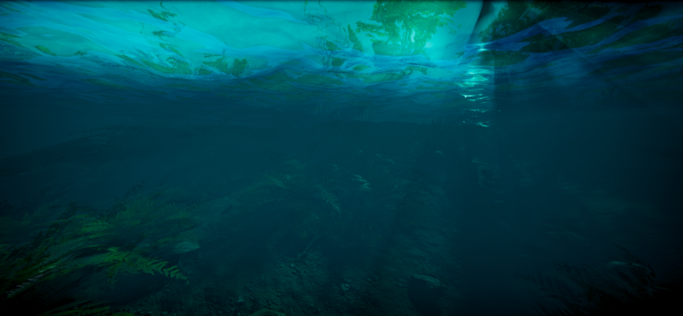

Overview
Short paragraph explaining what the project is and why you built it.
Overview
HDWS (High Definition Water System) is a GPU-driven ocean rendering system developed for Unity HDRP. The system simulates large-scale ocean behavior using spectral wave techniques while maintaining real-time performance.
Responsibilities
- Designed and implemented a GPU-based ocean simulation using the Tessendorf FFT spectrum.
- Developed custom HDRP-compatible shader passes for wave displacement, foam generation, shoreline blending, and flow map integration.
- Implemented compute shaders for spectral wave generation and real-time simulation updates.
- Optimized GPU memory usage and execution cost to maintain stable frame times in real-time applications.
Technical Details
- Fast Fourier Transform (FFT) implementation for wave spectrum evaluation.
- Phillips spectrum for realistic wave distribution.
- Normal reconstruction from displacement data.
- HDRP integration with physically-based lighting.
Performance Considerations
Focused on minimizing bandwidth usage and compute dispatch overhead while preserving high visual fidelity. Careful balancing of simulation resolution and performance ensured scalability across different hardware targets.
Water Simulation Videos
Screenshots

Underwater effect

Water and Shoreline simulation